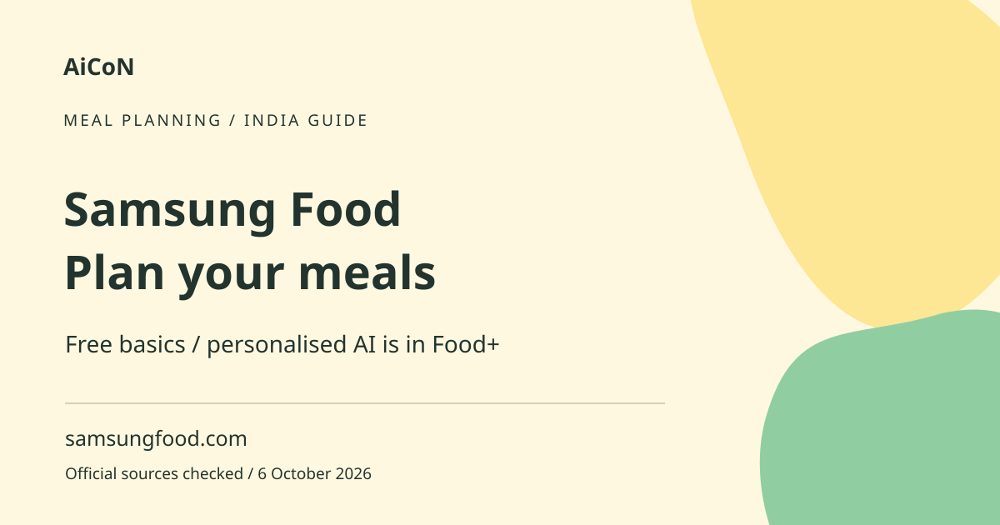

Samsung Food: free planning vs paid Food+ AI features
Samsung Food helps you collect recipes, make meal plans and build shopping lists. Its basic service is free. Personalised AI recipes, tailored seven-day plans and other advanced tools are part of paid Samsung Food+.

What is Samsung Food?
It is a recipe and meal-planning service. You can save recipes, organise ideas and make a plan for what to cook. A shopping list turns chosen meals into items to buy. This is different from a grocery order: making a list does not mean a shop will deliver it. Availability of shopping or device integrations can vary.
What is free and what is paid?
The official comparison lists browsing recipes, communities, saving recipes, making and sharing meal plans and shopping lists in the free service. Food+ adds features including AI recipe personalisation, tailored seven-day plans, nutrition goals, pantry tools and advanced recipe search. Several Plus tools are marked as mobile-app only. Do not assume a feature exists in the web version because it appears in a mobile screenshot.
Why it can help in Kerala
A household can collect recipes and plan a week before shopping. Add locally available ingredients and your own notes about portions. AI can suggest alternatives, but it may misunderstand a regional recipe, ingredient or cooking method. Check whether an ingredient name maps to the actual item you buy in Kerala. Do not follow a generated substitute blindly.
How to use it, step by step
- Open samsungfood.com and follow the official account or app route. Check the app-store listing for your device and region.
- Save a few recipes you already understand. Review ingredients, portions and cooking instructions.
- Create a simple meal plan using the free planning tools. Match it to your time, budget and household preferences.
- Build a shopping list and compare it with what you already have. Adjust quantities before buying.
- If you need AI personalisation, inspect Food+ in the mobile app. Confirm the particular feature is included on your device.
- Before starting a trial, read the local plan price, billing interval, renewal date and cancellation process. Do not choose annual billing assuming it is a monthly payment.
- Test a small set of recipes during the trial. Check substitutions and nutrition estimates against reliable information.
- If you do not want paid renewal, cancel through the subscription route used to buy it before the trial ends and keep confirmation.
Trial and India price caveat
The checked official page advertises a seven-day trial, followed by a monthly or annual Food+ subscription. It lists foreign-currency prices, but the earlier approximate INR conversion is not a verified India checkout price. Confirm the actual rupee amount and taxes in your app store. The trial begins a subscription; it is not a promise of unlimited permanently free AI. The page says cancellation during the trial avoids the later charge, subject to the purchase route's terms.
Food safety, allergies and health goals
Do not use AI meal plans as medical advice. Check allergens, packaging and cross-contamination risks yourself. A substitute can still be unsafe for a person with an allergy. Nutrition values can be estimates and portion sizes matter. For a medical diet, consult an appropriate professional rather than relying on an app's calorie or nutrient target. Review privacy settings before storing health goals or household details.
India availability
The web service is publicly accessible in the checked pages, but individual app availability, billing and integrations can differ by country. This article does not claim every feature is available on every Indian device. Check your store listing and the feature comparison before paying. A separate Samsung-device promotion lists EU, UK and US purchases; it is not an India-wide free Food+ offer.
Frequently asked questions
Are seven-day AI plans free?
The tailored AI plans are listed under Food+, not ordinary free planning.
Can I use all Plus tools on the web?
No. Several tools are marked mobile-only.
Does a trial stay free automatically?
No. It leads to paid billing unless cancelled under the applicable terms.
Can I trust AI allergy substitutions?
Check them carefully. The app is not a medical or food-safety guarantee.
Trial cancellation details
Samsung's subscription guide says the trial is available once per account and subscriptions renew after the trial. Cancel through the Apple or Google subscription settings used for purchase. Completing cancellation, not uninstalling the app, is what stops renewal. Keep the confirmation and verify the end date.
Official sources
- Official subscription management guide
- Official Samsung Food
- Food+ features and pricing
- Official subscription feature guide
Checked 6 October 2026. Expanded from an AiCoN short post delivered 6 October 2026. Portal screens and rules can change.